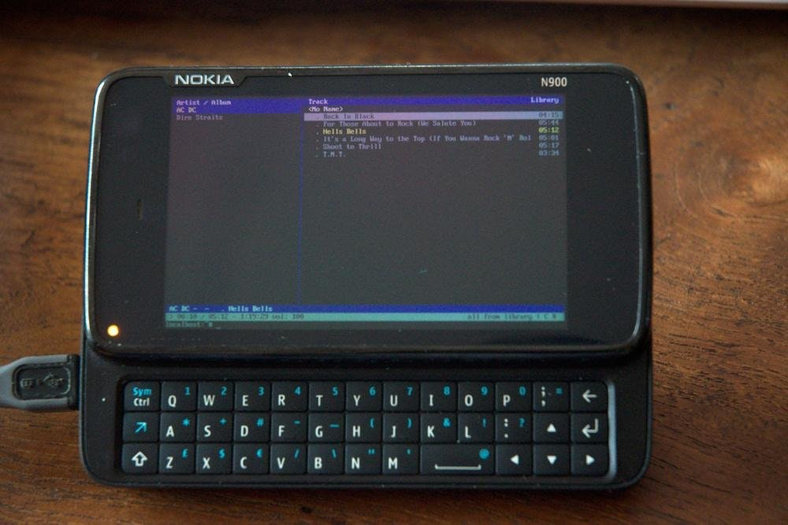
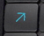

Nokia N900 (nokia-n900)
|

Nokia N900 running cmus |
|
| Manufacturer | Nokia |
|---|---|
| Name | N900 |
| Codename | nokia-n900 |
| Released | 2009 |
| Category | community |
| Original software | Maemo Fremantle on Linux 2.6 |
| postmarketOS kernel | Mainline Linux |
| Hardware | |
| Chipset | TI OMAP 3430 |
| CPU | 1x 600 MHz Cortex-A8 |
| GPU | PowerVR SGX530 |
| Display | 800x480 TFT resistive |
| Storage | 32 GB |
| Memory | 256 MB |
| Architecture | armv7 |
| Non-Android based device | ✔ |
| Unixbench Whet/Dhry score | 58.4 |
{kind=link}
| USB Networking |
Works
|
|---|---|
| Flashing |
Unavailable
|
| Touchscreen |
Works
|
| Display |
Works
|
| WiFi |
Works
|
| FDE |
Works
|
| Mainline |
Works
|
| Battery |
Works
|
| 3D Acceleration |
Broken
|
| Audio |
Works
|
| Bluetooth |
Broken
|
| Camera |
Partial
|
| GPS |
Partial
|
| Mobile data |
Works
|
| SMS |
Works
|
| Calls |
Partial
|
| USB OTG |
Unavailable
|
| NFC |
Unavailable
|
| Accelerometer |
Works
|
|---|---|
| Magnetometer |
Unavailable
|
| Ambient Light |
Works
|
| Proximity |
Works
|
| Hall Effect |
Works
|
| Ir TX |
Broken
|
|---|---|
| TrustZone |
|
|
This device is based on
TI OMAP 3430
.
See the SoC page for common tips, guides and troubleshooting steps |
{kind=link}
{kind=link}
Contents
Contributors
Additional info
Cameras are supported in the kernel, but have very complex media pipelines. Megapixels has preliminary support for at least the rear/main camera.
The GPU is a PowerVR SGX530 which does not have FOSS drivers, so 3D acceleration does not work with the mainline kernel. However, the required blobs and patched mesa have been merged into pmaports, and the linux openpvrsgx dev group maintains a "near-mainline" kernel fork with the required kernel driver.
Voice calls work, but need https://gitlab.com/libcmtspeechdata/libcmtspeechdata to route the speech data. Due to very tight timings involved in the associated protocol, the audio is very low quality unless additional processing is performed (Nokia had closed-source Pulseaudio modules for this).
There's bluetooth support at bluetooth-next, but that works on N950, not on N900. Bluetooth . The driver compiles fine and loads firmware correctly, then times out on the bluetooth 'read_BD_ADDR' HCI command.
OTG might work since the kernel has support. However, like Wileyfox_Swift_(wileyfox-crackling) , there is a hardware limitation that prevents the N900 from automatically detecting that there's a connected device, and also detecting the USB version/speed it supports. With some work, it most likely should work with manual activation
Installation
We currently only support installing and running pmOS from the microSD card on the N900. Getting it to work with eMMC and 0xFFFF is harder to implement and has no real benefit since the built-in eMMC is quite slow and fragile.
Flash postmarketOS to SD card
|
|
If your phone does not jump from Nokia logo to U-Boot prompt when powered on and booted with the keyboard slider open, you'll need to install U-Boot by Pali, see #Configure u-boot on eMMC to boot from the SD card |
From pre-built image (easy method)
Official images of postmarketOS for the N900 are built at least every week.
Choose an image for your device from the download page.
Then flash it to your SD as follows. Adjust the image name and the path to your SD card (you can figure it out with
lsblk
). Note that the
dd
command should use the device name, not the partition name (for example
/dev/sdc
instead of
/dev/sdc1
).
$ xzcat 20210209-0034-postmarketOS-edge-i3wm-0.3-nokia-n900.img.xz | sudo dd of=/dev/mmcblk... status=progress bs=1M
The first boot takes longer, as the root partition gets resized to fit the whole SD card. There is a lot of kernel output during boot, just wait patiently until i3wm shows up. Read
#i3wm
for the N900 specific keybindings, most importantly
Shift + Space
, then
t
to open a terminal. You can use
sudo nmtui
to connect to a Wi-Fi network (
nmcli
can be used also:
https://wiki.postmarketos.org/wiki/WiFi#Using_NetworkManager
).
With pmbootstrap (advanced)
Instead of the pre-built images, you can use
pmbootstrap
to generate your own image. It allows to use full disk encryption, use another user interface (e.g. XFCE4) and other customizations.
1. Initialize pmbootstrap
-
$ pmbootstrap.py init - Choose 'nokia-n900' as target device.
2. Start the build process and install the completed image to a sdcard
- (Replace /dev/sdX with the device for your sdcard)
-
$ pmbootstrap install --sdcard /dev/sdX
Boot from the SD card
-
Install u-boot from pali
on the n900 in Maemo. If this does not work from the graphical interface you may run
sudo apt-get install u-boot-flasherin maemo terminal (see wiki#16 and pmbootstrap#1371 ). See Additional Info below for instructions on configuring pmos to boot by default. - Place the sdcard into the n900 and boot it with the keyboard slide open
- Choose the u-boot shell
-
enter
run sdbootinto the shell
Configuring U-boot (optional)
In order to configure pmos to boot by default on the N900, using U-boot, you will need to boot into Maemo and create a
/etc/bootmenu.d/10-pmos.item
file as the root user with these contents:
/etc/bootmenu.d/10-pmos.item
ITEM_NAME="postmarketOS" ITEM_SCRIPT="boot.scr" ITEM_DEVICE="${EXT_CARD}p1" ITEM_FSTYPE="ext2"
It can be set as the default boot option by creating a symlink:
root@Nokia-N900:~# ln -s /etc/bootmenu.d/10-pmos.item /etc/default/bootmenu.item
Finally, run
u-boot-update-bootmenu
:
root@Nokia-N900:~# u-boot-update-bootmenu Default bootmenu entry is '/etc/bootmenu.d/10-pmos.item' Adding bootmenu entry for: 'Maemo 5 with attached kernel (Internal Nand)' Configuration file: /etc/bootmenu.d/10-pmos.item Adding bootmenu entry for: 'postmarketOS' Configuring this bootmenu entry as default Generating u-boot bootmenu script...
Note : This will set pmos as the default boot option. Maemo will still be accessible when booting the N900 with the keyboard slide out and selecting the relevant boot option in the u-boot boot menu.
Features
Wifi
The
device-nokia-n900-nonfree-firmware
package is required to provide the wl1251 firmware necessary for initializing the wifi device. (
#1414
)
You get asked during
pmbootstrap init
if you would like to install that proprietary firmware package.
Now you can use NetworkManager's console UI to connect to your network. Please note that
nmtui
does not work properly when started from
tmux
.
$ nmtui
WiFi settings do not work across reboots
The MAC address of the N900 WiFi interface gets randomized at every boot. Since the connection profile created with
nmtui
is bound to
the MAC address, it won't work at the next boot.
To solve this, after connecting you can use
nmtui
to edit the created profile, and remove the MAC address from the "Device" section
Without NetworkManager
If you do not want to use NetworkManager, stop it then run the following commands to connect to an encrypted network manually:
$ sudo su -
# ip link set wlan0 up
# iw wlan0 set type managed
# wpa_passphrase $YOUR_SSID > /etc/wpa_supplicant/wpa_supplicant.conf
<enter passphrase here and press Enter>
# exit
Connect to network using wpa_supplicant:
$ sudo rc-service wpa_supplicant restart
With iwd
From the 5.15.13 kernel package onwards, you are also able to use
iwd
to manage wireless, if you so prefer.
With ConnMan
If connman is already used for
GPRS
per instructions below, don't forget to unblacklist
wlan
in
/etc/connman/main.conf
.
$ connmanctl
connmanctl> scan wifi
Scan completed for wifi
connmanctl> services
mywifi wifi_001fdfcafe01_6d7977696669_managed_psk
connmanctl> agent on
Agent registered
connmanctl> connect wifi_001fdfcafe01_6d7977696669_managed_psk
Agent RequestInput wifi_001fdfcafe01_6d7977696669_managed_psk
Passphrase = [ Type=psk, Requirement=mandatory ]
Passphrase? Mysupersecurewifipassword123
Connected wifi_001fdfcafe01_6d7977696669_managed_psk
connmanctl> services
*AO mywifi wifi_001fdfcafe01_6d7977696669_managed_psk
Power saving / ping times
It should be possible to disable power saving for better ping times, see maemo-leste#172 .
$ sudo su -
# apk add iw
# iw dev wlan0 set power_save off
# exit
Sound
Modules need not to be compiled, sound support is built into kernel. Install alsa-utils.
aplay /usr/share/sounds/alsa/Front_Left.wav
NikkSaan provided an advanced audio configuration in #702 (comment) .
Keyboard Backlight
There are 6 keyboard backlight LEDs that can be adjusted, they are found under
/sys/class/leds/lp5523:kb{1-6}
. To adjust brightness, write a value, $VAL between 0 and 255, to the
brightness
parameter as the root user:
for i in $(seq 1 6);
do echo $VAL > /sys/class/leds/lp5523\:kb$i/brightness
done
Keyboard layout
The keyboard layout is asked during
pmbootstrap init
after you select the
nokia-n900
device.
Available keymaps:
{kind=link}
{kind=link}
{kind=link}
{kind=link}
Console
- NOTE: during installation pmbootstrap will typically ask you for the desired keymap. The following is only for experimentation: normally all should just work fine after setting up the SD card from pmbootstrap. The following section may be dated and pmbootstrap has already done the job for you.
To obtain your desired language keymap file for the RX-51, such as this one :
-
On the N900, install
kbd-bkeymaps, either by usingpmbootstrap install --add kbd-bkeymapson the host system or by runningapk add kbd-bkeymapson the device itself.
-
The keymap must be in binary format, bmap. This can be accomplished using the
loadkeystool:
$ apk add kbd kbd-bkeymaps
$ loadkeys -b rx51_us.map > rx51_us.bmap
$ gzip rx51_us.bmap
-
Compress it and copy it to
/usr/share/bkeymaps/us/on the N900.
-
Log into the N900, and run
sudo setup-keymap, then selectusand finallyrx51_us.
(TODO: Need to pull 'official' vconsole keymaps from Maemo5 if they exist..)
X11
- NOTE: during installation pmbootstrap will typically ask you for the desired X11 xkb keymap. The following is only for experimentation: normally all should just work fine after setting up the SD card from pmbootstrap. The following section may be dated and pmbootstrap has already done the job for you.
In X11 you can use
setxkbmap
to configure the desired layout.
Right now it's configured to use the
nokiarx51/us
layout by default (see
40-xkb.conf
) then the pmbootstrap script will patch this file to set the
Option "XkbLayout"
to
"nn"
where "nn" is your country code.
|
|
Info: Tab is ctrl+i |
Console switching
You can use the

blue arrow
key in combination with the
Volume Up/Down
to switch to a different virtual terminal.
{kind=link}
If you installed postmarketOS with a UI, you first have to enable again the other VT by editing the
/etc/inittab
file and uncomment the following lines:
...
# Set up a couple of getty's
tty1::respawn:/sbin/getty 38400 tty1
tty2::respawn:/sbin/getty 38400 tty2
tty3::respawn:/sbin/getty 38400 tty3
tty4::respawn:/sbin/getty 38400 tty4
tty5::respawn:/sbin/getty 38400 tty5
tty6::respawn:/sbin/getty 38400 tty6
...
Display
With DRM enabled (
pmbootstrap!197
), the display can be managed at this location:
/sys/devices/platform/omapdrm.0/graphics/fb0/
For example, the display can be turned off by:
# echo 1 > /sys/devices/platform/omapdrm.0/graphics/fb0/blank
To adjust brightness:
# # Replace $VAL with a value from 0 to 255: # echo $VAL > /sys/class/backlight/acx565akm/brightness
GUI
i3wm
I3wm
is the recommended UI.
It is lightweight and fast, and we have a custom N900 configuration that optimizes for its keyboard (
photos
). The most important keybindings are described below, for details see
i3wm.conf
. This file gets installed to
~/.config/i3/config
and of course you can customize it. If you have good additions, please make a merge request so everybody benefits from an improved default config.
default mode
- shift + space: switch to "command mode"
command mode
- t: open terminal
- k: kill current program
- w: workspace mode
- r: restart i3wm (use after modifying the config)
- q: go back to "default mode"
workspace mode
- a/s/d/f/g: switch to workspace 1/2/3/4/5
- q: go back to "command mode"
Xfce4
Xfce4 also works very well on the N900
Others
There are also Mate, etc.
Misc: Power button
If you want to make use of the power button, bind
XF86PowerOff
to this script:
FILE=~/.screenoff
if [ -f $FILE ]; then
xinput set-prop 8 "Device Enabled" 1
xinput set-prop 6 "Device Enabled" 1
xinput set-prop 9 "Device Enabled" 1
xset dpms force on
rm ~/.screenoff
else
xinput set-prop 8 "Device Enabled" 0
xinput set-prop 6 "Device Enabled" 0
xinput set-prop 9 "Device Enabled" 0
xset dpms force off
touch ~/.screenoff
fi
|
|
You cannot use this to turn the screen back on if i3lock or similar is running, as they would grab the keys |
Misc: Middle click and right click
Obviously, you can't middle click with a touchscreen, but this can be annoying when it's one of the few ways to paste in the terminal. This script simulates a middle click:
xdotool mousedown --clearmodifiers 2
xdotool mouseup 2
xdotool keyup alt
xdotool keyup ctrl
xdotool keyup shift
For simulating right click button you can use this command:
xdotool click 3
You can bind it to any key you wish.
XF86WebCam
is a good choice since it's fairly easy to reach and isn't used for anything.
Battery
Charging
Battery charging is fully supported by the kernel and does not need any special configuration.
Capacity Reporting
The current battery capacity can be found under
/sys/class/power_supply/bq27200-0/capacity
, and is represented as a percentage. For example, a value of
11
equates to
11%
. To calibrate the battery and get a more accurate capacity report:
- Charge it up fully , using a wall power adapter.
- Unplug the device and allow the battery to run all the way down until it powers off. This may take quite a while to happen (>24hrs, but can be made shorter by running a CPU intensive workload). Do not let it charge at all during this time. This means you may not use USB for example, as this automatically causes the device to start charging, albeit slowly.
- When device eventually powers off, the battery charge gauge chip should then be calibrated. You may charge it up again to use the device.
Datasheet for the bq27200 charge gauge chip
Hint: To disable the LED charging indication, disable the charging chip's status pin.
echo 0 > /sys/class/power_supply/bq24150a-0/stat_pin_enable
.
Datasheet for the bq24150 charging chip
Battery Protection
Currently, when battery gets below suitable operating voltage, the device dies. This is bad for the battery and the file system. Here is a script that monitors the battery, and powers the device off before the battery reaches critical state. For suggested usage, read the program's comments.
Temperature
There's battery temperature sensor.
$ cat /sys/devices/platform/68000000.ocp/48072000.i2c/i2c-2/2-0055/power_supply/bq27200-0/temp ; \
cat /sys/devices/virtual/thermal/thermal_zone0/temp
324
32400
Clock
Setting the hardware clock
Since 49fd9e0e4efcf030ca47344858bdc74370a78603 the hardware clock works. If your hardware clock doesn't have the time set you can set it with:
$ date -s "2017-08-14 16:34:50"
# Write the current system time to the hardware clock
$ hwclock -w
Setting the hardware alarm clock
Realtime clock at /dev/rtc0 is on the twl4030 (PMU), and allows setting an alarm to wake the device from sleep, poweroff states.
Control trough
rtcwake
(Manual Page)
.
# Suspends the device to memory for 10 seconds
rtcwake --verbose --seconds 10 --mode mem
# Power off the device and power it on after $TIME, where $TIME is the number of seconds since epoch (1970-01-01)
rtcwake --verbose --time_t $TIME --mode no
/sbin/poweroff
Manual control from sysfs:
# To set the wakealarm directly, set $TIME to number of seconds since epoch (1970-01-01). Then poweroff or suspend:
echo $TIME > /sys/class/rtc/rtc0/wakealarm
# To set new wakealarm time, first reset time to 0!
echo 0 > /sys/class/rtc/rtc0/wakealarm
|
|
When setting number of seconds since epoch, make sure you account for your timezone and see how your realtime clock keeps the time (utc or local)! |
SMS
You can use ofono test scripts
sudo apk add ofono-scripts; cd /usr/lib/ofono-scripts
Here's an example using the test scripts to enable the modem and send an SMS:
# ./enable-modem # ./online-modem # ./send-sms 5033784582 "I like pizza." 0
USB Gadget
Mass Storage
The Mass Storage class exposes a block device as a flash drive on your host machine.
For example, to use the "MyDocs" partition as Mass Storage Device, make sure you unmount the partition first (if mounted), then execute:
echo /dev/mmcblk1p1 > /sys/devices/platform/68000000.ocp/480ab000.usb_otg_hs/musb-hdrc.0.auto/gadget/lun0/file
If you only need read permissions on the partition, you can set the read-only flag before exporting it:
echo 1 > /sys/devices/platform/68000000.ocp/480ab000.usb_otg_hs/musb-hdrc.0.auto/gadget/lun0/ro
GPRS
GPRS can be managed by
connman
. Either install connman using
apk
or add it when installing pmOS by passing
--add connman
to
pmbootstrap
.
|
|
Once you perform the following steps, the GPRS connection will be established by connman automatically on every boot. |
It's
VERY
important that you add the following to
/etc/connman/main.conf
BEFORE
starting connman, else it will take over all network connection handling and disconnect you if you are connected over SSH:
/etc/connman/main.conf
NetworkInterfaceBlacklist = usb,wlan
Configure connman to start at boot:
$ sudo rc-update add connman
Stop ofono in order to set APN:
$ sudo rc-service ofono stop
Edit APN, where <IMSI> should be replaced in the following commands with the IMSI from your SIM card. Replace <APN> with the relevant APN for your cellular carrier (e.g. fast.t-mobile.com). This file should be created when ofono starts, so you should only need to add the APN.
/var/lib/ofono/<IMSI>/gprs
[Settings]
Powered=true
RoamingAllowed=false
[context1]
Name=Internet
AccessPointName=<APN>
Username=
Password=
AuthenticationMethod=chap
Type=internet
Protocol=ip
Start ofono and power on modem.
$ sudo rc-service ofono start $ sudo connmanctl enable cellular
In some cases, it seems necessary to run a scan before the necessary service will show in connman, even though the scan is 'unsupported':
$ sudo connmanctl scan cellular Error /net/connman/technology/cellular: Not supported $ sudo connmanctl services cellular_340369959729712_context1
Connect to the cellular service:
$ sudo connmanctl connect cellular_340369959729712_context1
Connected cellular_340369959729712_context1
$ ip addr show gprs0
10: gprs0: <POINTOPOINT,NOARP,UP,LOWER_UP> mtu 1400 qdisc pfifo_fast state UNKNOWN qlen 10
link/[821]
inet 33.238.141.172/32 brd 33.238.141.172 scope global gprs0
valid_lft forever preferred_lft forever
GPS
First, get network and date to work. Next, clone tui repository. it contains includes many goodies, including script for hardware testing, gps support, and graphical ofono control software.
mkdir /my cd /my git clone https://gitlab.com/tui/tui.git
Next, install packages necessary for compiling software and prepare gps2. enable-modem, online-modem and you should be able to run gps2. AGPS is not available, so expect long startup.
apk add gcc vala musl-dev make linux-headers gpsd cd /my/tui/ofone make gps2 ./gps2
gps2 reportedly can talk to gpsd. Needs further investigation.
FM Transmitter
The N900 contains an Si4713 FM transmitter, it's controlled by video4linux. To start transmitting:
$ v4l2-ctl -d /dev/radio0 --set-ctrl=mute=0 --set-freq=95.21
Now there should be silence on 95.21Mhz instead of noise when tuning in with a radio
$ aplay -vv some-very-good-music.wav
Torch
The device has an ADP1653 flash controller, mainly for use with the camera. It drives two white power LEDs connected in series, and has an additional red indicator led (referred to as a privacy indicator). The ADP1653 has a driver in mainline kernel, and it probes fine. However, some DTS changes are needed to make it work, since the driver requires it to be tied to a camera.
In the meantime, the LEDs can be used as a torch manually using
i2cset
.
However,
BE WARNED:
setting wrong values via i2c runs the risk of over-driving the LEDs and causing permanent hardware damage.
Install the prerequisites
$ sudo apk add i2c-tools
Unload the driver in case it is already loaded. We will use i2c manually
$ sudo modprobe -r adp1653
Enable the chip
$ echo 88 | sudo tee /sys/class/gpio/export
$ echo "out" | sudo tee /sys/class/gpio/gpio88/direction
$ echo 1 | sudo tee /sys/class/gpio/gpio88/value
Turn the torch on, using the lowest torch current - DO NOT use other values here or you risk burning the LED
Values between 1 and 7 enable the red privacy/recording led, with different intensity
0x8 is the lowest torch intensity, and we do not recommend going above it
$ sudo i2cset -y 2 0x30 0x0 0x8
Turn the torch off
$ sudo i2cset -y 2 0x30 0x0 0x0
Disable the chip
$ echo 0 | sudo tee /sys/class/gpio/gpio88/value
$ echo 88 | sudo tee /sys/class/gpio/unexport
Resources
- Device package
- Kernel package
- Kernel source
- Images and Flashers for Maemo
- #1617 issue about Wi-Fi Setup and Keyboard layout
- ollieparanoid's efforts to use the N900 as music player
- N900 rescueOS
- Mobile phone battery emulator describes how to create a mock battery for Nokia phones of the n900 type so the phone can be run from a PSU